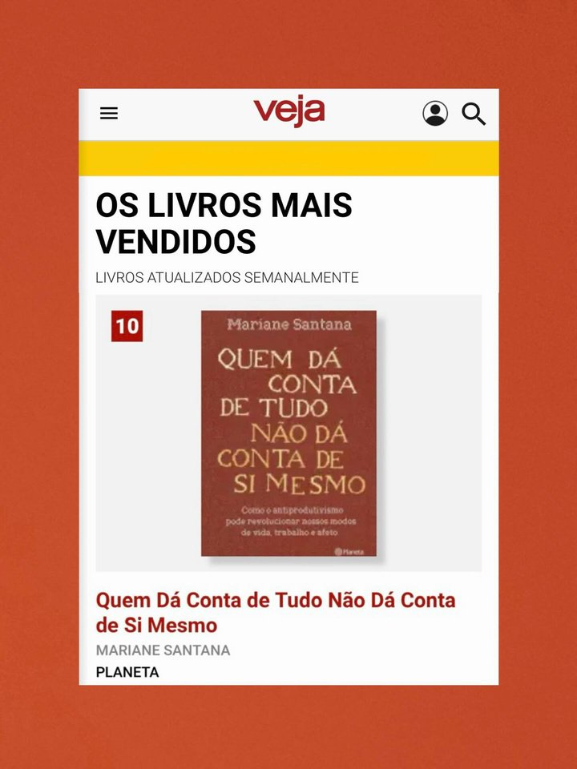
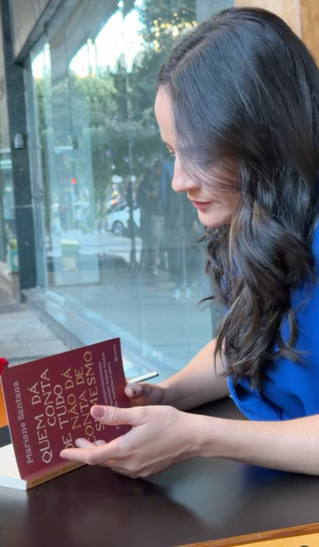
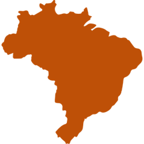

Ética e sigilo
Prezamos pela segurança das informações compartilhadas antes, durante e depois da nossa parceria.
portfólio. palestras e criação de conteúdo
Pesquisadora, professora e palestrante. Reflexões sobre trabalho, sociedade e cultura contemporânea.
@marianecsantana
Mariane Santana é pesquisadora de estudos culturais e urbanos, professora e palestrante.
Pós-graduada em Psicologia Organizacional e Gestão de Pessoas pela PUC-RS, com pesquisa sobre Saúde Mental do Trabalhador. Mestra em Teoria e História da Arquitetura e do Urbanismo pela USP. Fundadora da comunidade de estudos Pausa Crítica e autora do livro “Quem dá conta de tudo não dá conta de si mesmo” (2026).
Com mais de 400 mil seguidores nas redes sociais, desenvolve reflexões sobre trabalho, sociedade e cultura contemporânea.

Autora de “Quem Dá Conta de Tudo Não Dá Conta de Si Mesmo”, livro de não-ficção que entrou na lista dos mais vendidos do país, publicado pela Editora Planeta (2026).
A obra discute o esgotamento causado pela cultura de produtividade extrema. Em seu lugar, Mariane Santana propõe uma reflexão sobre a importância de estabelecer limites, recusar uma vida voltada só para produzir, e reconquistar espaço para o descanso e o ócio.

@marianecsantana

0% brasil
homens
0%
mulheres
0%
faixas etárias
@marianecsantana
@marianecsantana
Clique nos vídeos para conhecer mais sobre o meu trabalho
@marianecsantana
Prezamos pela segurança das informações compartilhadas antes, durante e depois da nossa parceria.
Temos o compromisso de contribuir com o bem-estar da sociedade, respeitando todas as diferenças. Celebramos a diversidade e defendemos a equidade.
Cada projeto é pensado de maneira única. Queremos conhecer a cultura da sua organização e as necessidades específicas do seu contexto.
Nossas trocas são embasadas na segurança psicológica. Acreditamos que a empatia e o espírito colaborativo são elementos essenciais para equipes saudáveis.
Durante a definição do trabalho, vamos dialogar para encontrar a melhor maneira de atender aos nossos objetivos.
Minha missão é construir singularidade em cada trabalho, para que a sua mensagem chegue às pessoas com assertividade, acolhimento e responsabilidade.